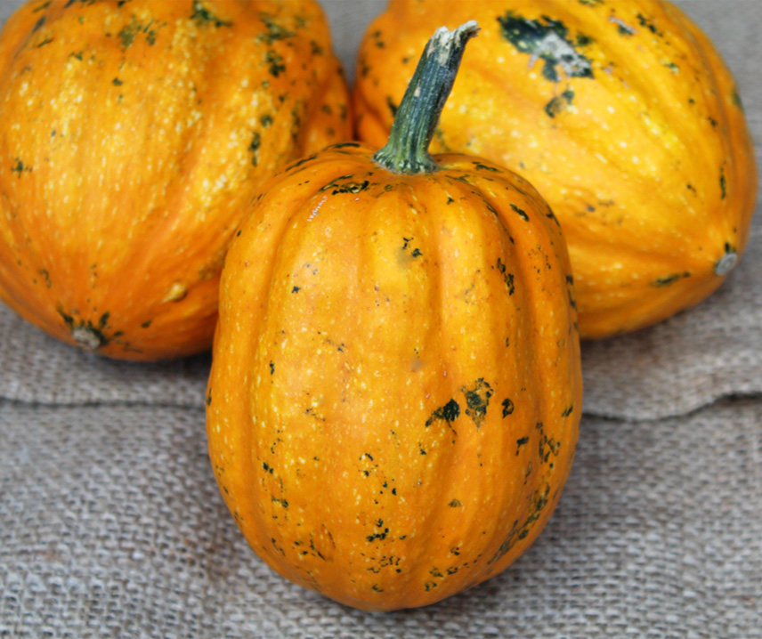

Zucca: uso tradizionale, proprietà e avvertenze
Cucurbita pepo

Simbolo di trasformazione e rinascita nelle tradizioni legate al ciclo delle stagioni.
Proprietà attribuite dalla tradizione
- Monografia EMAL'Agenzia europea per i medicinali riconosce un uso tradizionale dei semi di Cucurbita pepo per il sollievo dei disturbi delle basse vie urinarie legati all'ipertrofia prostatica benigna o alla vescica iperattiva, dopo aver escluso con il medico condizioni più gravi (EMA 2012).
- Dato botanicoLa monografia usa semi interi, maturi ed essiccati. Le preparazioni ammesse sono la droga polverizzata, estratti secchi o molli e l'olio grasso (EMA 2012).
Uso tradizionale
La polpa è un alimento usato in numerose preparazioni dolci e salate; i semi si consumano tostati o al naturale. Come medicinale tradizionale si usano i semi: secondo la monografia EMA, 2,5-7,5 g di semi essiccati due volte al giorno, oppure 3-4 g di olio grasso al giorno. L'uso a lungo termine è possibile. Il consumo alimentare dei semi non equivale all'assunzione di preparazioni medicinali standardizzate (EMA 2012).
Avvertenze e controindicazioni
Controindicazione: ipersensibilità alla sostanza attiva. Il medicinale non è raccomandato sotto i 18 anni. In gravidanza e allattamento la sicurezza non è accertata e l'uso non è raccomandato per mancanza di dati; la monografia aggiunge che non sono emersi problemi di malformazioni con semi e olio, e che il loro uso è possibile in gravidanza solo se clinicamente necessario (EMA 2012). Effetti indesiderati: disturbi gastrointestinali lievi, rari nelle segnalazioni dei prodotti tedeschi e in non più del 4% dei pazienti negli studi clinici (EMA 2012). Allergie: sono descritte reazioni allergiche ai semi di zucca e ad altre Cucurbitacee (zucchine, melone, cocomero), con prurito, orticaria, gonfiore di viso e bocca, fino a shock anafilattico (EMA 2012). Chi è allergico alle Cucurbitacee deve considerare questo rischio e chiedere il parere del medico prima dell'uso. Interazioni: in un prodotto combinato con estratto di Serenoa repens e vitamina E sono stati riportati casi di alterazione della coagulazione (INR aumentato), rientrati dopo la sospensione; un nesso causale con i semi di zucca non è stato dimostrato (EMA 2012). Chi assume anticoagulanti deve parlarne con il medico. Nessun caso di sovradosaggio riportato. Non ci sono dati affidabili su genotossicità, cancerogenesi e tossicità riproduttiva (EMA 2012). In presenza di difficoltà a urinare, sangue nelle urine, febbre, spasmi o dolore alla minzione, consultare il medico. Avvertenza sulla preparazione: alimento, infuso, estratto e olio essenziale non sono equivalenti, e le indicazioni di sicurezza di una preparazione non valgono automaticamente per le altre.
Fonti
- EMA, Community herbal monograph on Cucurbita pepo L., semen (EMA/HMPC/136024/2010), 2012.
- EMA, Assessment report on Cucurbita pepo L., semen (EMA/HMPC/136022/2010), 2012.